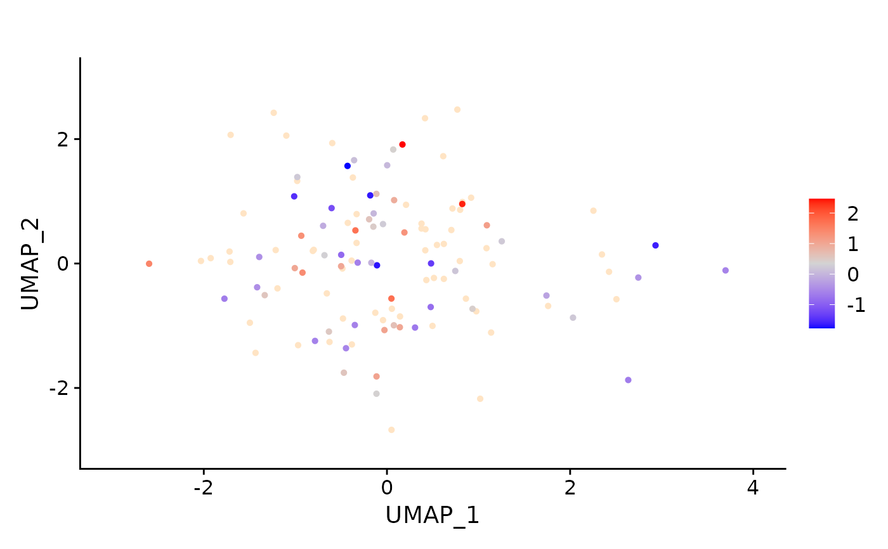

Puts cell_imputed_score onto an existing embedding, so that fate
potential can be read against transcriptional state. Cells absent from
cell_imputed_score — typically the future time point's cells, which
were never scored — are drawn in na_color.
Usage
plot_cellGrowthUmap(
seurat_object,
cell_imputed_score,
colors_use = list("blue", "lightgray", "red"),
na_color = "bisque",
reduction = "umap",
title = "",
order = TRUE
)Arguments
- seurat_object
A Seurat object carrying the reduction named by
reduction.- cell_imputed_score
A named numeric vector of per-cell fate potentials, names being cell IDs — the
cell_imputed_scoreelement ofcyfer_finalize, on the log10 scale. Need not cover every cell.- colors_use
List of colours passed to
scCustomize::FeaturePlot_scCustom()as the gradient, low to high. Defaultlist("blue", "lightgray", "red").- na_color
Colour for unscored cells and for cells below the 5th percentile. Default
"bisque".- reduction
Name of the reduction to plot. Default
"umap".- title
Plot title. Default
"".- order
Whether to draw high-value cells on top of low-value ones. Default
TRUE, which makes high-potential cells visible in dense regions but overstates how many of them there are.
Details
Two thresholds are applied to the colour scale, both silently, and both matter when comparing panels:
Scores are winsorized at their 99th percentile, so a handful of very high cells cannot flatten the rest of the scale. The top 1% of cells are therefore drawn at an indistinguishable colour.
Cells below the 5th percentile are handed to
na_cutoff, so they takena_colorrather than the low end of the gradient — the low tail is greyed out, not coloured.
Both cutoffs are recomputed per call from the supplied scores, so two panels built from different fits do not share a scale.
The scores are written into the object as the metadata columns
cell_imputed_score (unwinsorized) and tmp (winsorized, the one
actually plotted). The object is modified only locally.
Examples
set.seed(10)
count_mat <- matrix(stats::rpois(50 * 120, lambda = 3), nrow = 50,
dimnames = list(paste0("gene", 1:50), paste0("cell", 1:120)))
seurat_object <- suppressWarnings(Seurat::CreateSeuratObject(counts = count_mat))
seurat_object$assigned_lineage <- rep(paste0("L", 1:12), length.out = 120)
seurat_object$time_celltype <- rep(c("day0", "day7"), each = 60)
# scores for the day0 cells only, as cyfer_finalize() would return them
score_vec <- stats::rnorm(60)
names(score_vec) <- colnames(seurat_object)[1:60]
# any 2-D embedding stored under the name passed as `reduction`
umap_mat <- matrix(stats::rnorm(120 * 2), nrow = 120, ncol = 2,
dimnames = list(colnames(seurat_object), c("UMAP_1", "UMAP_2")))
seurat_object[["umap"]] <- Seurat::CreateDimReducObject(embeddings = umap_mat,
key = "UMAP_",
assay = "RNA")
plot_cellGrowthUmap(seurat_object = seurat_object,
cell_imputed_score = score_vec,
reduction = "umap")
#> Warning: Some of the plotted features are from meta.data slot.
#> • Please check that `na_cutoff` param is being set appropriately for those
#> features.
